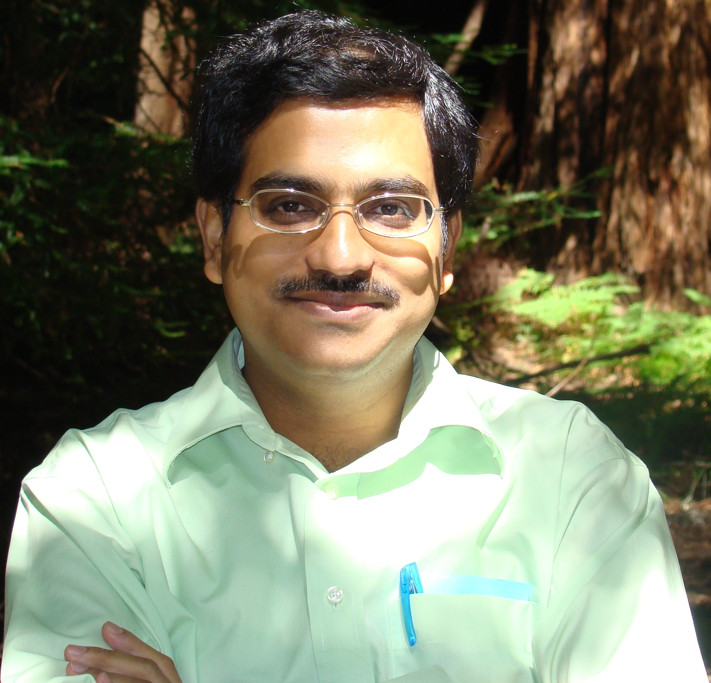
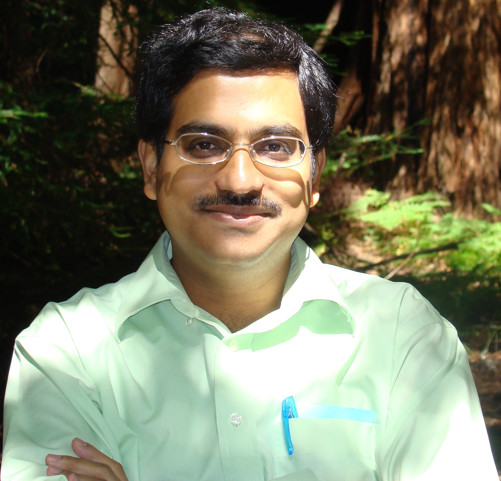

Abhik Roychoudhury
Provost's Chair Professor
Department of Computer Science
National University of Singapore
abhik at comp.nus.edu.sg
abhik at u.nus.edu, dcsar at nus.edu.sg

|
|
|

|
[CV]
[TEACHING] [STUDENTS] [RESEARCH] [PUBLICATIONS]
[TOOLS] [SERVICE]
Google Scholar & Selected Papers
Newsflash!!
Watch the video on program repair to know about our work (another video).
ESEC-FSE 2022 is in Singapore, please attend, see you all in November 2022.
Thanks to Oracle Labs for their generous donation to support our research on program repair for security.
Ministry of Education (MoE) Tier 3 program on Automated Program Repair (2022-27): Post-doctoral positions available.
Bio
Abhik Roychoudhury is a
Provost's Chair Professor of Computer Science at the National University of
Singapore, where he has been since 2001 after receiving his Ph.D. in
Computer Science from the State University of New York at Stony Brook in
2000. He is the Director of the National Satellite of
Excellence in Trustworthy Software Systems at Singapore (2019-23). He has
previously led the TSUNAMi
research center (2015-20), a large five-year long targeted research
effort funded by National Research Foundation in the domain of trust-worthy
software. He has also helped set up the Singapore
Cyber-security Consortium (2016-22), which is a consortium of 25 companies
in the cyber-security space engaging with academia for research and
collaboration. Abhik's research focuses on software testing and analysis,
software security and trust-worthy software construction. His research team is known for contributions to
automated program repair, and fuzz testing.
Abhik is a member of the Steering committee of the flagship conferences in Software Engineering, International Conference on Software Engineering (ICSE) and Symposium on Foundations of Software Engineering (FSE). Specifically he has served as Program Chair of ISSTA 2016, General Chair of FSE 2022 and Program Co-chair of ICSE 2024. He has served as an Associate Editor of IEEE Transactions on Software Engineering (TSE) during 2014-18. He is also an Associate Editor of IEEE Transactions on Dependable and Secure Computing (TDSC) and ACM Transactions on Software Engineering and Methodology (TOSEM). His former doctoral students have been placed all over the world as academics (Peking University, University College London, Max-Planck Institute, University of Melbourne, SUSTech, SUTD).
Research Interests
Software systems, software engineering, trustworthy
systems (overview talk).
At present, my research group is actively engaged in research on the following topics.
Here, here and here are articles capturing perspectives on program repair. And, here is a recent perspective on fuzzing.
Research Projects
Current
Automated Program Repair, Ministry of Education (MoE) Tier3 program, 2022-27.
Descartes: Intelligent Modeling for Decision Making in Critical Urban Systems, 2021-26.
National Satellite of Excellence in Trustworthy Software Systems, 2019-23.
Recent past
FuzzInfer: Fuzzing Protocol Implementations, with DSO, 2019-21.
Trustworthy systems from un-trusted component amalgamations,
Singapore Cyber-security Consortium, 2016-22.
News
Older Events (2019 and earlier)
Views
Overview talk on Fuzz Testing at Dagstuhl Seminar, November 2021
Keynote at 27th Asia Pacific Software Engineering Conference (APSEC) 2020.
Opening remarks given at Cybersecurity R&D Workshop at Singapore International Cyberweek (SICW) 2020.
[VIDEO] (Part of) a talk given for PhD students at National University of Singapore PhD open Day, October 2020.
Similar talk was given at Doctoral Sympoium of various conferences, including ISSTA 2019.
Distinguished Lecture at Max-Planck Institute for Software Systems (July 2019)
and KAIST (June 2020).
Similar talks were given at at International Summer School on Information Security and
Protection, Canberra (2018) and ISSTA Summer School, Beijing (2019).
Distinguished Lecture, University of Luxembourg, Interdisciplinary Centre for Security, Reliability and Trust (SnT), January 2017, Watch VIDEO on Youtube.
Reflection
In our lives as educator ...
"
Here is one of my favorites, with a nuanced connotation in terms of research ...